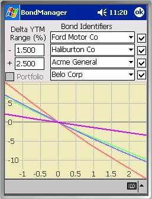
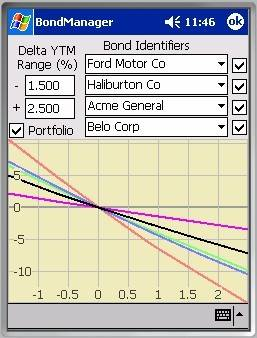

Rate Sensitivity ExplorerThe Rate Sensitivity Explorer provides a graphical view of how bond values respond to changes in yield. Bonds lose market value when interest rates rise, and gain value when interest rates fall. The relationship between interest rates and value is nonlinear, but over the small (reasonable) interest rate ranges presented in the examples here, the curves are nearly linear, though there is some curvature evident in Ford Motor Co’s rate sensitivity (red).
The X-axis depicts prospective changes in each issue’s yield to maturity. The Y-axis depicts the percentage change in the value of the bond (or portfolio) at each X-value. The bond’s current yield to maturity is represented by the 0 point, so all curves will pass through (0,0). The colors assigned to the curves are red, green, blue, and purple ordered from topmost symbol to bottom, e.g. Ford Motor Co – red, Haliburton Co – green, etc. as shown in the screenshot at right.

Plot Enabling CheckboxesThe four checkboxes on the right side of the dialog control whether the bond identifier currently displayed in the adjacent combo-box will be plotted below. All four plots are enabled in these examples.
The four ComboBoxes immediately to the left of the check
boxes allow you to enter a bond identifier, by selecting the identifiers of a
bond previously defined in the Bond Definition Dialog. There are three selection methods possible. If you’re just interested in plotting the
next issue in the list, whatever that happens to be, you can scroll through the
list of identifiers using the up/down hardware keys. A fresh plot is generated for every arrow-up
and arrow-down key press, so this method gets you something new to review with
little effort. However, since each plot computes
the present value of all future coupons for all enabled issues, multiple times
across the X-axis, it’s a costly mechanism for navigating a long way through
the list of issues. If you need to move
a long distance in the list, the fast way is to use the drop down list and make
your selection there. The upside down
caret on the right end drops down a scrollable list containing the identifiers containing
all of the bond issues you’ve defined. Of
course you can also type the bond identifier manually. Auto-completion makes this less painful than
it might otherwise be to select one character at a time with the pen.
Positions must exist in the portfolio for the Portfolio checkbox to be enabled. In the example above right, there were no positions in the portfolio to plot and the Portfolio checkbox is disabled. Prior to capturing the second example at right, two positions were created, representing 200 of the Belo Corp bonds and 100 of the Ford Motor Co bonds. With positions in the portfolio, the Portfolio check box is enabled. When checked, an additional curve is plotted in black, representing the cost weighted average rate sensitivity of all bond positions in the portfolio. Issues in the portfolio with positions are each weighted by the cost of those positions relative to the cost of the entire bond portfolio. Note that the portfolio’s rate sensitivity is now 1/3 of the way between the rate sensitivities of Belo and Ford.
The ‘-‘ edit box specifies how far below the current yield to maturity to set the low X-value in the plot.
The ‘+’ edit box specifies how far above the current yield to maturity to set the high X-value in the plot.